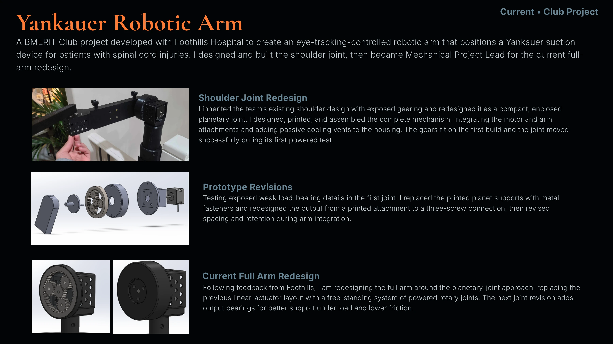

Current • Club Project
A BMERIT Club project developed with Foothills Hospital to create an eye-tracking-controlled robotic arm that positions a Yankauer suction device for patients with spinal cord injuries. I designed and built the shoulder joint, then became Mechanical Project Lead for the current full-arm redesign.
I inherited the team’s existing shoulder design with exposed gearing and redesigned it as a compact, enclosed planetary joint. I designed, printed, and assembled the complete mechanism, integrating the motor and arm attachments and adding passive cooling vents to the housing. The gears fit on the first build and the joint moved successfully during its first powered test.
Testing exposed weak load-bearing details in the first joint. I replaced the printed planet supports with metal fasteners and redesigned the output from a printed attachment to a three-screw connection, then revised spacing and retention during arm integration.
Following feedback from Foothills, I am redesigning the full arm around the planetary-joint approach, replacing the previous linear-actuator layout with a free-standing system of powered rotary joints. The next joint revision adds output bearings for better support under load and lower friction.
Continue scrolling for technical detail